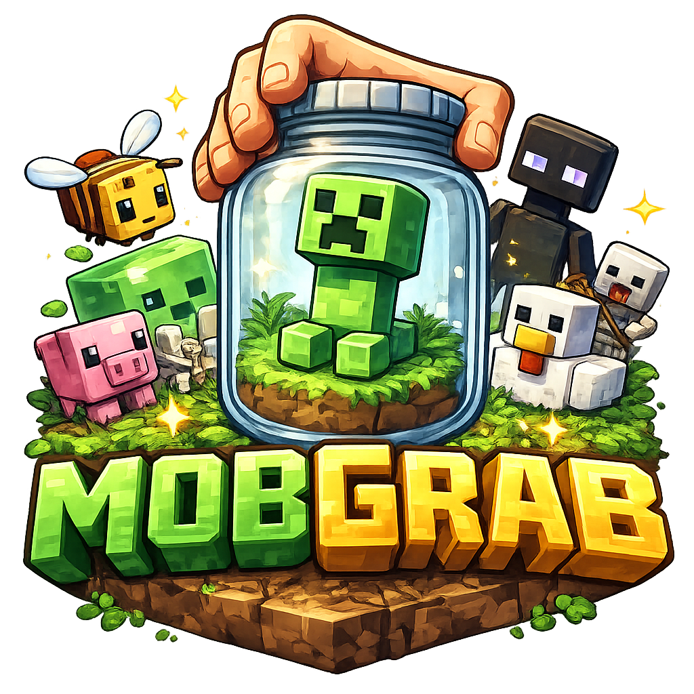

Sneak + right-click
Any enabled mob, anywhere you have build permission.

Pick up any mob as an item. Place them back down. All data preserved.
Not running Paper? There is also a server-side Fabric mod, which works in singleplayer and hardcore. Still in testing, no release build yet.
THE MECHANIC
Shift + right-click turns a living mob into a player head with its face on it. Right-click a block and it walks away exactly as it arrived.
Any enabled mob, anywhere you have build permission.
Health, trades, equipment and variant ride along in the lore. Tradeable and storable.
Everything is restored — trades, health, name, equipment, all of it.
If your inventory is full, the item drops at your feet. Mobs picked up by one player can be placed by anyone with mobgrab.place.
WHAT YOU GET
Every living mob in 26.2 can be picked up, each with a custom head texture.
Health, trades, profession, equipment, enchants, name tags, variants — nothing is lost.
Respects WorldGuard, PlotSquared, and GriefPrevention build permissions.
Form-based GUI for Bedrock players via Floodgate integration.
Per-mob permissions, category bundles, and admin controls. Works great with LuckPerms.
Toggle individual mobs, customize sounds and particles, set cooldowns, whitelist or blacklist mode.
QUICK START
Drop MobGrab.jar into your server's plugins/ folder and restart.
Grant mobgrab.pickup.passive for farm animals, mobgrab.pickup.* for everything, or individual perms like mobgrab.pickup.cow. Don't forget mobgrab.place.
Use /mobgrab gui to toggle which mobs can be picked up, or edit config.yml directly.
Sneak + right-click any enabled mob to pick it up. Right-click a block to place it back down.
COMPATIBILITY
Every integration is a soft dependency — MobGrab works fine without any of them installed.
BUILD flag checks
Plot ownership checks
Claim build access
Single mob from stack
Bedrock form GUI
Cross-platform play
Auto-migration
Full permission support
Download the latest release or read the full documentation.